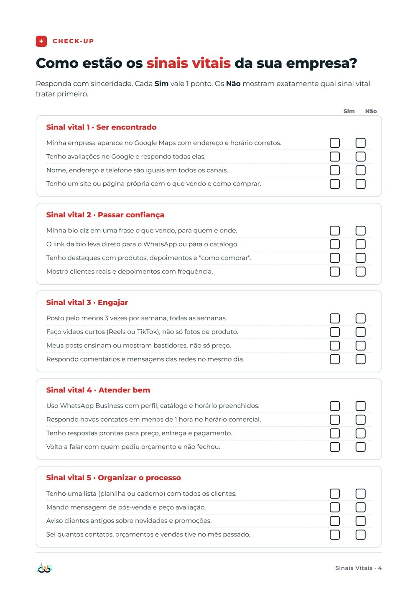
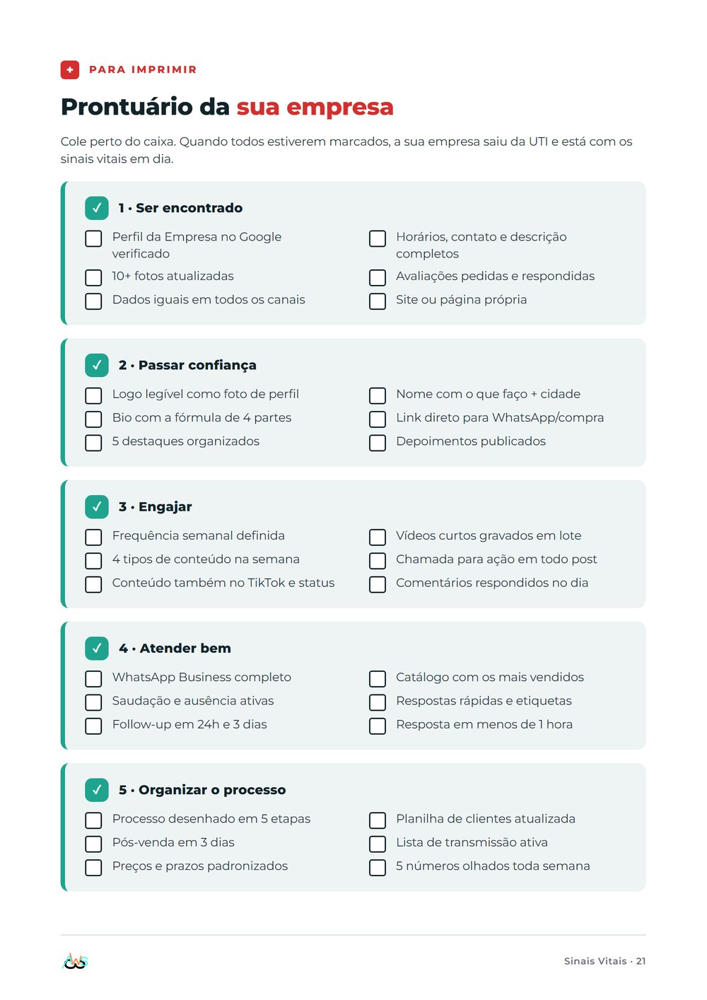
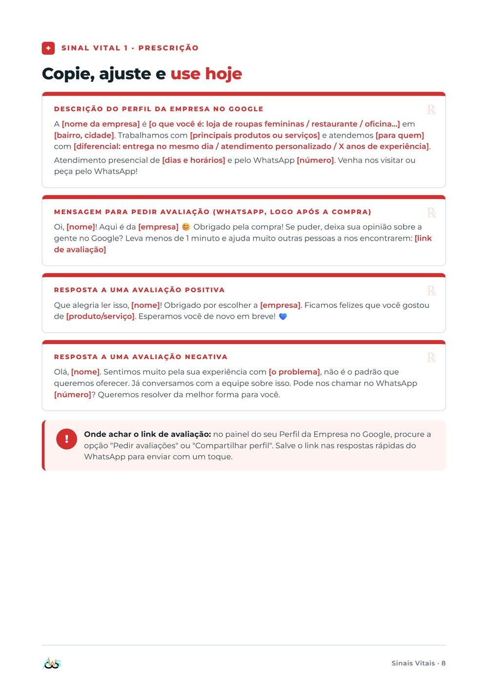
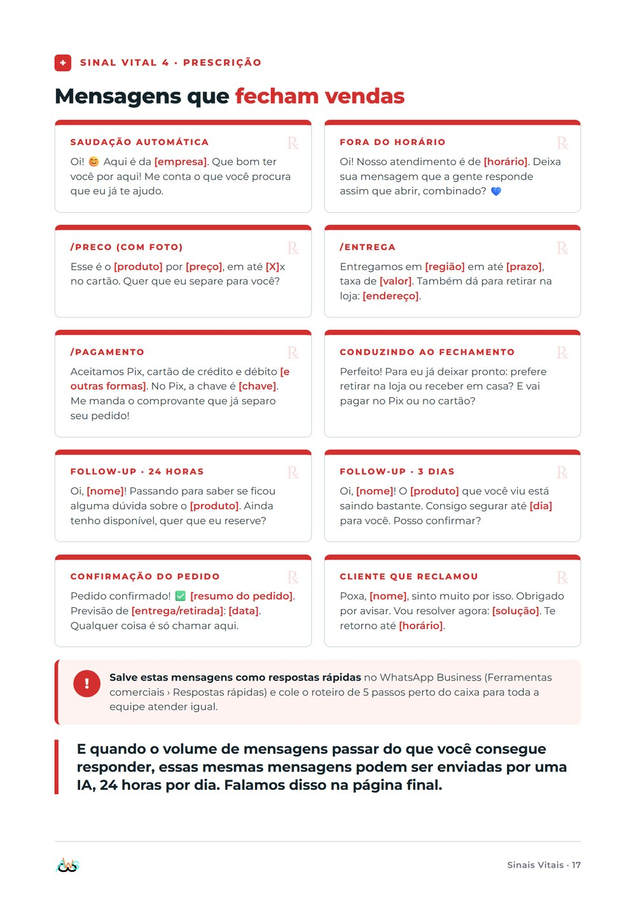
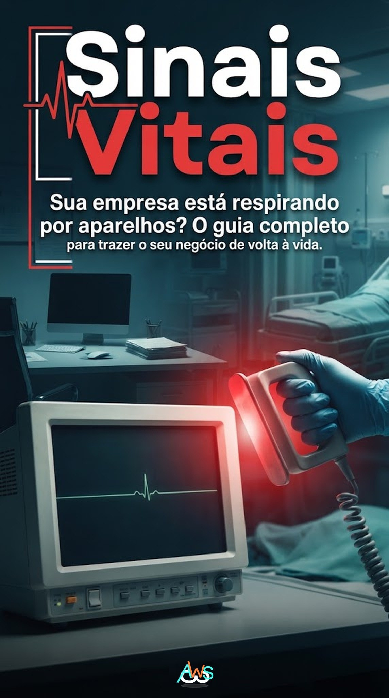

PULSO DA EMPRESA
VENDAS / DIA
82
BALCÃO VAZIO
Bella Moda4,8 ★★★★★ (312) · Aberto agoraResponde em minutos no WhatsApp
Ateliê Centro4,6 ★★★★★ (98) · Aberto agora
Loja da EsquinaSem avaliações · Horário não informado
BM
284posts
12,4 milseguidores
Bella Moda · Moda feminina
Peças novas toda semana. Entrega no bairro.
Peça pelo WhatsApp, respondemos na hora.
Peças novas toda semana. Entrega no bairro.
Peça pelo WhatsApp, respondemos na hora.
Chamar no WhatsApp
Bella Moda
Oi! Tem esse vestido no M?14:02
Temos sim! Separo para você e entrego hoje.14:03
respondeu em 1 min
CHECK-UP0/3 em dia
Ser encontradoAparece no Google?
Sim
Não
Passar confiançaBio leva ao WhatsApp?
Sim
Não
Atender bemResponde em menos de 1h?
Sim
Não
AGUARDANDOresponda as
três perguntas
três perguntas





22 páginas
passo a passo
01Ser encontrado
02Passar confiança
03Engajar
04Atender bem
05Organizar o processo
RESULTADO DO EXAME0/5 lidos
PULSO DA EMPRESA
34
COMENTE
CHECKUP
CHECKUP